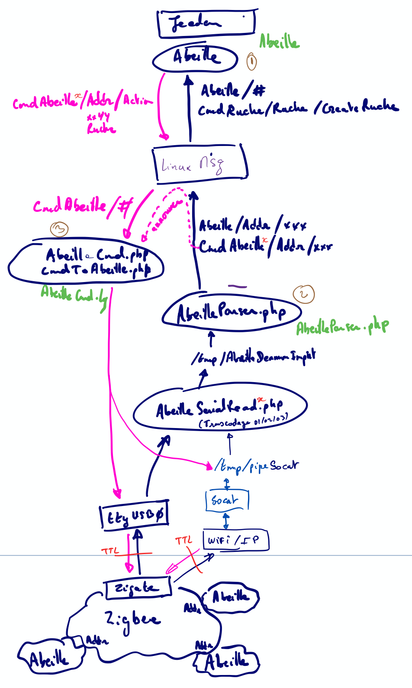

Developpement¶
Cette section est dédiée aux developpeurs ou à ceux qui veulent entrer un peu + dans les entrailles d’Abeille.
Grandes lignes¶
branche master : pour tous les développements en cours a condition que les pushs soient utilisables et « stabilisés » pour la phase de test.
branche beta: pour figer un développement et le mettre en test avant de passer en stable
branche stable: version stable. C’est la branche officielle vue par Jeedom, donc pour tous les utilisateurs.
Dev en cours: autre branche
Vue générale¶
Vue générale de la solution
Règles à suivre¶
La structure de base des plugins est présentée dans la doc Jeedom: https://doc.jeedom.com/fr_FR/dev/plugin_template. Elle est similaire à la structure du “core” lui même.
Un template est fourni par Jeedom: https://github.com/jeedom/plugin-template mais en dehors des informations déja présentées ci dessous, il n’est pas vraiment utilisé ni cohérent.
Il faut que l’on se cale le plus possible sur ces documents.
Règles à suivre additionnelles pour Abeille¶
Outils de dev: Visual Studio Code avec les paramètres par défaut.
Git: garder le master toujours fonctionnel après un commit.
Git: beaucoup de petit commit et souvent mais pas de gros commit pas souvent.
Abeille / Core OS: Garder Abeille le plus loin possible de l’OS. Uniquement quand cela n’est pas possible faire du code spécifique.
Abeille doit tourner sur une VM
Abeille doit tourner sur un docker
Abeille ne doit pas faire plus de 50Mo
La doc n’est pas dans le github du plugin
Pour éviter d’avoir deux personnes qui travaillent sur le meme sujet, nous utilisons les issues Github. Pour chaque dev que vous faites vous créé une issue et on vous l assigne. Une seule et unique personne assignée par issue.
Le code est en Anglais
Toutes les fonctions doivent avoir leur javadoc
Est accepté: ///@TODO: blablabla dans le code
Hiérarchie (répertoires) du plugin Abeille¶
Basé sur « https://doc.jeedom.com/fr_FR/dev/plugin_template ».
Note: Tous les noms de répertoire en ANGLAIS et en MINUSCULES
core : Dossier contenant tous les fichiers de fonctionnement interne. Ne contient pas de fichiers gérant la partie « User Interface » donc pas d’html.
ajax : dossier contenant les fichiers cibles d’appels AJAX. Les fichiers de type AJAX doivent se finir par « .ajax.php ».
class : dossier contenant la classe du plugin. Les fichiers de class php doivent obligatoirement se finir par « .class.php ».
config : Fichiers de configuration du plugin.
A DETAILLER
php : dossier pouvant contenir des fonctions ne devant pas forcément appartenir à une classe (souvent utilisé pour permettre l’inclusion de multiples classes ou fichiers de configuration en une fois) Toutes les librairies Abeille PHP.
scripts : Dossier contenant les scripts internes d’Abeille.
desktop : Dossier contenant la vue “bureau” du plugin (en opposition avec la vue “mobile”).
js : Dossier contenant tous les fichiers de type javascript.
php : Dossier contenant tous les fichiers de type php qui font de l’affichage.
css : Si nécessaire, fichier CSS pour la vue « desktop ».
modal : Dossier contenant le code des modals du plugin.
mobile : Contient les fichiers gérant la UI « mobile ».
plugin_info : Contient les fichiers permettant à Jeedom de qualifier le plugin, de faire son installation et sa configuration.
info.json : Fichier contenant les informations de base du plugin (il est obligatoire sinon Jeedom ne verra pas le plugin), il contient entre autre l’identifiant du module, la description, les instructions d’installation…
install.php : Fichier contenant (si besoin) les méthodes d’installation et de désinstallation du plugin
configuration.php : Fichier contenant les paramètres à configurer du plugin indépendants des équipements de celui-ci (exemple pour le module Zwave l’ip du Raspberry Pi ayant la carte Razberry)
docs
N’est pas utilisé pour ne pas dépasser la taille limite imposée par Jeedom. Les docs sont dans un repo séparé.
resources
fw_zigate : FW zigbee commun à toutes les zigates actuelles.
fw_wifi : FW specifique à la zigate WIFI.
tmp
Répertoire LOCAL (non versionné) ne contenant que qq fichiers qui bougent rarement. Il contient entre autre le fichier de config « developpeur ». Les logs sont migrés sous le « tmp » officiel Jeedom (jeedom::getTmpFolder(« Abeille »)).
Répertoires hors plugin
tmp Jeedom
Il s’agit du répertoire temporaire Jeedom (jeedom::getTmpFolder(« Abeille »)). Utilisé pour stocker les log « previous », les logs de support, ou comme zone tampon pour créer des fichiers compressés par ex.
Propositions à discuter
Network : a virer progressivement. Les fichiers devraient pouvoir trouver leur place dans « core », et/ou « desktop »/ »mobile »
Pas de partie « demond » : Tout comme « Network », il n’ya a pas de classification liée à une fonctionalité. Au vu des recherches, ca n’a pas vraiment de sens. Aucun plugin a isolé son « démon », sauf « openzwave » qui lui meme se base sur un code exterieur. Le format du template n’est jamais utilisé par les plugin officiels. Les démons n’étant rien d’autre que des codes ou classes, je suggère de coller à la structure Jeedom ci dessus et mettre ces codes dans « core ».
tests : Vu dans Jeedom, ca fait du sens d’isoler les codes de test. Sous structure dans la lignée de core. Ex tests/php, tests/class …
Test d’intégrité du plugin¶
Besoin¶
Après une mise-à-jour, il est important de
vérifier que les fichiers sont intègres
virer les fichiers obsolètes
En effet il se peut que par manque de place le processus de mise-à-jour se passe mal et qu’aucune information en ce sens ne soit remontée à l’utilisateur.
La solution adoptée est de générer un fichier de signature MD5 pour tous les fichiers versionnés (et uniquement ceux la), juste avant le push. Le script « .tools/gen_md5.sh » est fait pour ça.
Problèmes¶
Le fichier de signature doit être le DERNIER mis-à-jour avant le push
Il doit contenir une information permettant de savoir si il est toujours valide
Solution actuelle¶
Le script « .tools/git_push.sh » doit être utilisé pour tout nouveau push. Il va
modifier le fichier de version (plugin_info/Abeille.version)
regenerer les signatures via « .tools/gen_md5.sh » dans « plugin_info/Abeille.md5 »
et faire le git add + commit + push
Autres problèmes¶
Si on a une solution pour les push, il n’y en a pour l’instant aucune lors des merge, surtout si le merge est fait directement côté GitHub.
Apres n’importe quel merge, ni la version ni les signatures ne sont à jour. Il faut donc ne pas tenter le test d’intégrité en l’etat.
Attention un « git pull » fait un merge. Seul celui qui clone la branche de 0, ou qui fait un « git reset –hard » sera parfaitement aligné et pourra effectuer le test d’intégrité.
Format “Abeille.version”¶
Le format actuel est du type:
# Auto-generated Abeille's version
YYDDMM-BRANCH-X
La branche est celle de départ, et en aucun cas la branche de destination.
Le “X” permet de numéroter differents push le même jour mais dans le cas d’une branche « stable » ou « beta » il est probable qu’il reste à 1 la plupart du temps.
Format “Abeille.md5”¶
Le format actuel est du type:
# Auto-generated Abeille's MD5 file. DO NOT MODIFY !
# VERSION="210209-DEV_TCHARP38-7"
xxxxxxxxx-md5-skipped-xxxxxxxxxx *.editorconfig
xxxxxxxxx-md5-skipped-xxxxxxxxxx *.gitattributes
4ab85f363cd3a7261ffe01ec8250b0ef *Network/AbeilleLQI.php
0e64aeaf27361deeeda734eec1acdcaf *Network/AbeilleLQI_List.php
351f27fbeb161e7a4d7450c3b5c3548a *Network/AbeilleLQI_Map.php
Langues utilisateurs et developpeurs¶
Le plugin est initialement conçu pour la langue Française uniquement mais pour être aussi ouvert que Jeedom et permettre à la communauté internationale de l’utiliser, des règles de developpement sont nécessaires.
Proposition pour l’aspect utilisateur final
Tout ce qui est affichable à l’utilisateur final doit pouvoir être traduit via les fichiers JSON (ex: core/i18n/en_US.json)
Côté logs, seuls les modes info & erreur doivent apparaitrent dans la langue choisie. On ne peut en aucun cas perdre de temps sur des traductions du mode « debug ».
Proposition pour les developpements
Tout ce qui est developpement doit être en Anglais (plus compact, plus « ouvert »). Ca inclut donc
les noms de fonctions
les commentaires internes
les noms de répertoire
les noms de variables
les logs en mode « debug »
Propostion pour la doc
Aucune pour l’instant. Elle n’existe qu’en Français et comme de gros changements sont en cours, ca semble prématuré.
Contrairement au plugin, la doc n’a pas de « traduction ». Un traducteur automatique donnerait surement des résultats inappropriés.
Procédures de mise-à-jour¶
Ce chapitre n’est pas tiré d’une quelconque doc officielle Jeedom mais issu de recherches via le code Jeedom. Le but est de clarifier la procédure de mise-à-jour utilisée par Jeedom.
A partir dur market¶
A creuser
A partir de GitHub¶

A priori Jeedom fait la chose suivante (trouvé dans “core/class/update.class.php”)
Telechargement du zip correspondant au repo donné
Le téléchargement se fait dans /tmp/jeedom/<nom-special> (ex: /tmp/jeedom/tcharp38-Abeille-af97a57)
Décompression du zip au même endroit
Déplacement de tous les répertoires vers la destination finale (…plugins/abeille)
Cette procédure semble avoir plusieurs failles qui doivent être prises en compte côté Abeille
Pas ou tres peu de controle à chaque étape. Un pb de manque de place peut passer inapercu jusqu’au mauvais fonctionnement du plugin.
Les droits des fichiers (en particulier des scripts ou autre binaire) semblent ignorés et pas restaurés.